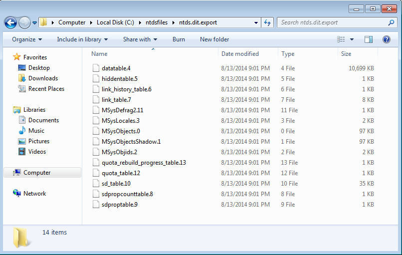

Background
Github link to Get-NTDSHashes.ps1 and all relevant files
Password audits can be a tricky proposition. Many higher-ups need to sign off on the idea, possibly even board members. But you'll never know about that. One day, your boss will catch you walking by and tell you that you need to test the user's Active Directory passwords against dictionary attacks. First thought: my wordlist will finally get some use. Second thought: How exactly do I go about this?
After some research, I found that mubix had acconplished this. However, he finished up with Kali, and I wanted to stay Windows-native.
I gathered up all of the tools I needed (Python, pycrypto, libesedb, and Invoke-NinjaCopy among other thing, and got to work. I knew I wanted a fully automated process. This meant checking for dependencies and silently installing them. Python is an MSI, no sweat. VC++ 2012 Redistrubutable? No problems there. Everything else? Nightmare fuel! Ok, not quite. Only the pycrypto installer needed to be silenced. I used EMCO MSI Package Builder to capture the .exe install and stuff it into an MSI. After some minor tweaks, that was working! Great place to stop for a beer.
After the dependencies came the meat and potatoes. Copying the NTDS.dit and SYSTEM hive from a running DC, reading the NTDS database and getting something usable out of it was the real task.
clymb3r's Invoke-NinjaCopy saved a lot of time. I could've used mubix's method of creating a shadow copy, but this was easier. Invoke-Ninja copy required a few minor tweaks to run on .Net 4.5.2, but other than that it was good to go. More info on the tweaks here: http://support.microsoft.com/kb/2909958
Enter libesedb. Like I said, I wanted to stay Windows-native. This meant building libesedb with Visual Studio All I had at my disposal was VS 2013. I didn't have too many issues building this because it's so well written. Compiling this introduced the need for the VC++ 2012 Redistrubutable. A small price to pay! This allowed us to extract the tables from NTDS.dit.

We're in pretty good shape now, so it's time to introduce NTDSXtract. The included python modules hadn't been tested on Windows at the time I attempted this project. Another first! As you may have guessed, they worked wonderfully. Hashes and account info extracted successfully.
This was the end of the script... for a moment. The extracted info is great, but it's in a messy format. Good thing we have dshashes.py. This puts the hashes in a nice hashcat-ready format.
Gratuitous screenshots below
{kind=link}
{kind=link}